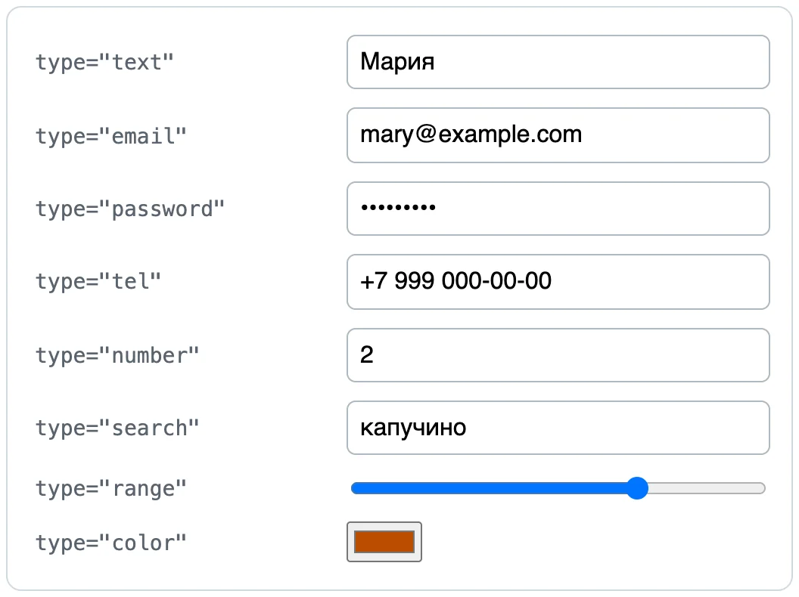
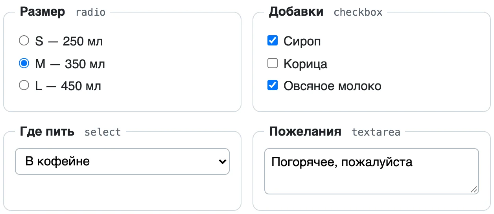
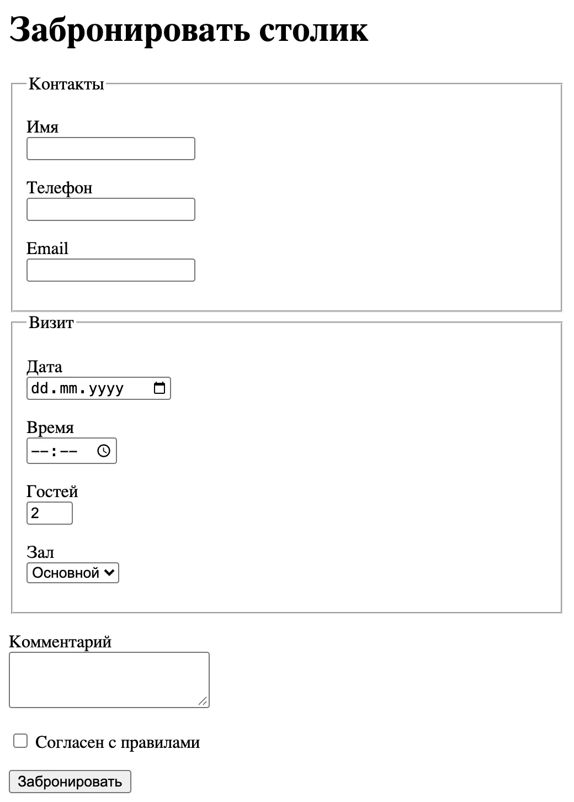
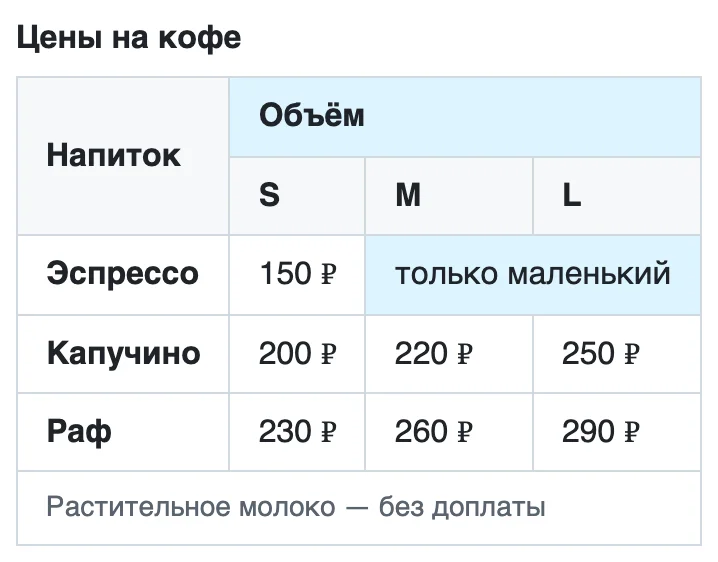
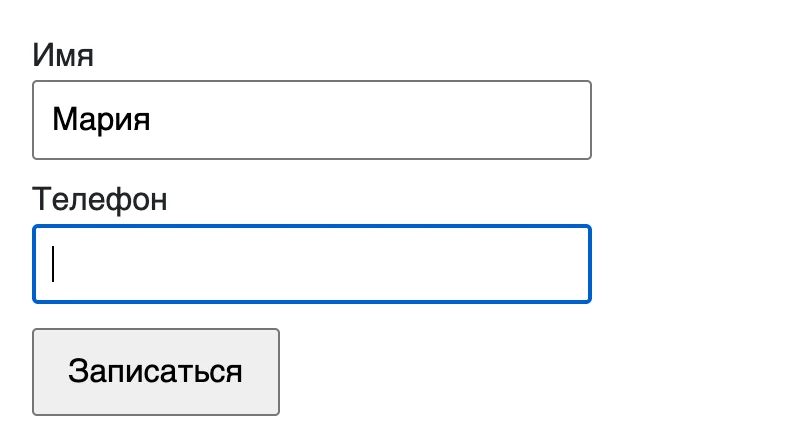

Модуль 1. HTML и CSS. Урок 5
Как пользователь вводит данные
Фронтенд с нуля
Часть 1
Как страница получает данные от человека
Вход, поиск, заказ, запись к врачу — всё это формы
<form action="/booking" method="post">
<label for="name">Имя</label>
<input id="name" name="name" required>
<button type="submit">Записаться</button>
</form>post для данных, get для поиска<label for="email">Email</label>
<input id="email" type="email">placeholder — это пример значения, а не подпись. Он исчезает, как только человек начал печатать
Часть 2
Правильный тип поля — половина удобства

| type | На телефоне и в браузере |
|---|---|
email |
клавиатура с @, проверка адреса |
tel |
цифровая клавиатура |
number |
стрелки, min, max, step |
date, time |
календарь и часы |
password |
точки вместо символов |
search, url |
кнопка «Найти», проверка адреса |

name<input type="radio" id="m" name="size" value="m" checked>
<label for="m">M — 350 мл</label>Подпись — для человека, value — для сервера. checked — выбрано сразу
<input id="drink" name="drink" list="drinks">
<datalist id="drinks">
<option value="Эспрессо">
<option value="Капучино">
</datalist>Предлагает варианты, но можно написать свой
<form action="/upload" method="post"
enctype="multipart/form-data">
<input name="photo" type="file"
accept="image/*" multiple>
</form>Без enctype уйдёт только имя файла
<button type="submit">Отправить</button>
<button type="reset">Очистить</button>
<button type="button">Показать пароль</button>Без type кнопка в форме отправляет её
Действие — только button, переход — только a. Кнопку из div не видит ни Tab, ни VoiceOver
Часть 3
Браузер проверит поля сам — без JavaScript
<input name="name" required minlength="2">
<input name="email" type="email" required>
<input name="guests" type="number" min="1" max="10">
<input name="zip" pattern="[0-9]{6}"
title="Индекс — 6 цифр">0.5Проверка в браузере — для удобства человека. Защита — на сервере: клиенту нельзя доверять
<fieldset>
<legend>Как с вами связаться?</legend>
<input type="radio" id="c-phone" name="contact">
<label for="c-phone">Телефон</label>
</fieldset>VoiceOver прочитает вопрос вместе с вариантом
Имя, телефон, дата, гости, зал, комментарий, согласие.
Без единой строки CSS — но уже удобная и доступная. Красоту добавим в следующем уроке

Часть 4
Данные в строках и столбцах. Сайт для всех

<tr>
<th rowspan="2">Напиток</th>
<th colspan="3">Объём</th>
</tr>
<tr><th>S</th><th>M</th><th>L</th></tr>Таблица — только для данных, не для раскладки
